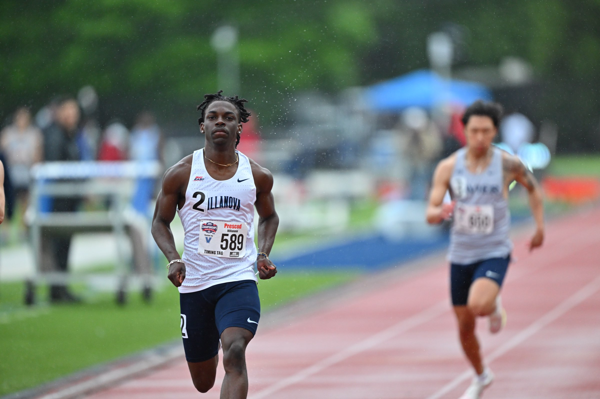
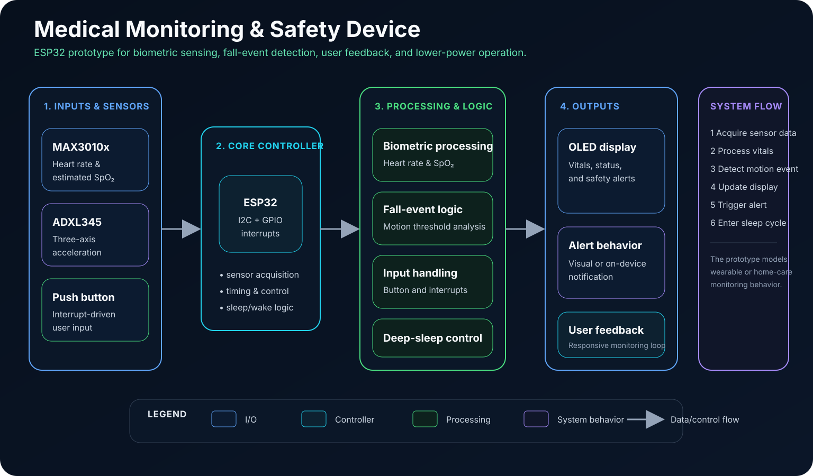
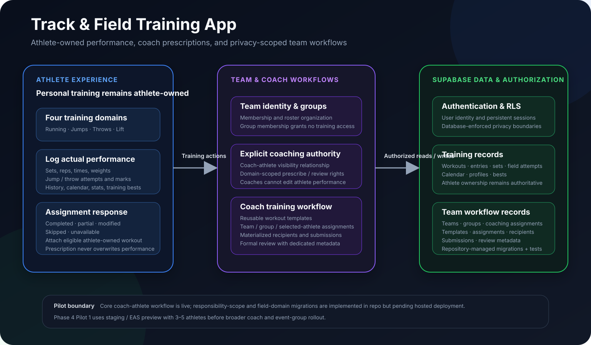
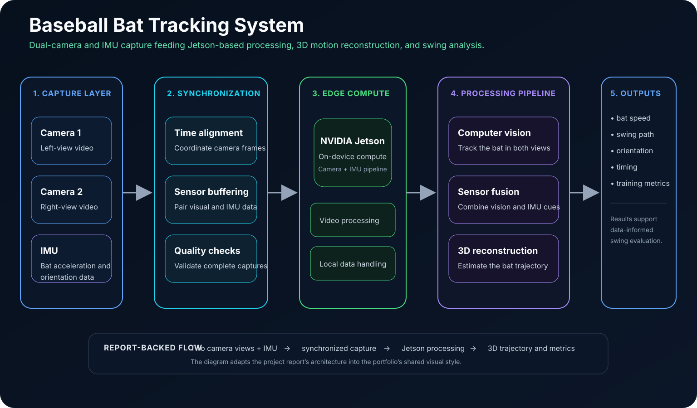
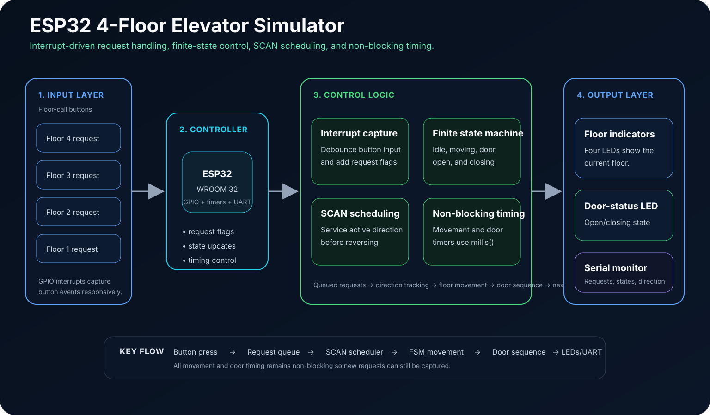

12 documented projects
Biomedical engineer
I build connected systems across sensing hardware, embedded control, software, vision, and data.
Four engineering domains
Move through the project record by the part of the system under test.
- Biomedical systems
Miniature fNIRS research and a medical-monitoring wearable prototype.
- Embedded control
ESP32 elevator, alarm-clock, and security systems.
- Software platforms
Training, staffing, and job-intelligence workflows.
- Computer vision and data
Baseball tracking, company intelligence, and Caribbean economic data.




System architecture
One coordinates people and permissions; the other coordinates sensors, states, and motors.
Candidate records and permissions
Role-aware workflows connect candidate records, staffing decisions, and permission boundaries.
Sensors, states, and motors
Sensor inputs pass through an explicit state model before the motor and display outputs change.

Engineering background
B.S. Electrical Engineering; M.S. Biomedical Engineering candidate; Computer Science minor; Villanova Track & Field student-athlete.
- Electrical engineering
Circuits, embedded control, instrumentation, and system integration.
- Biomedical engineering
Optical sensing, physiological measurement, and research translation.
- Computer science
Software architecture, data pipelines, and interface implementation.